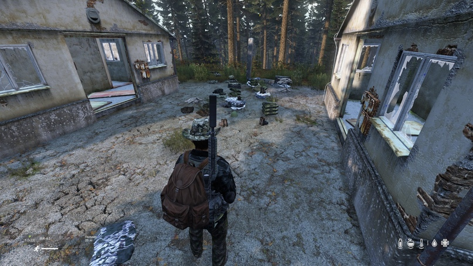

Выживая на сервере "LIVONIA's FALL", вы автоматически соглашаетесь с перечисленными здесь правилами, понимаете всю ответственность и возможные последствия за несоблюдение таковых
ВЫЖИВШИЙ, ЗАПОМНИ: Незнание правил не освобождает тебя от ответственности!
- ОБЩИЕ ПОЛОЖЕНИЯ:
- Данные правила обязательны для всех игроков сервера без исключения;
- Администрация оставляет за собой право на выбор наказания провинившегося игрока;
- Попытка выдать себя за администрацию сервера (Использование ников администраторов, модераторов, говорить от имени администрации и пр.) наказывается перманентным баном;
- Запрещается самовольное интерпретирование положений данных Правил. Учитывается только одно мнение - мнение Администрации;
- На сервере можно играть только персонажем с именем. "Выжившие" персонажи автоматически кикаются с сервера. Если игра не позволяет сохранить вашего персонажа в игре, пропишите его в строке параметров запуска игры командой -name=ИМЯ
- Доступ на сервер осуществляется по белым спискам после прохождения интервью в Discord;
- НА СЕРВЕРЕ ЗАПРЕЩЕНО/НАКАЗУЕМО:
- Нарушать правила общения и поведения в игре наказание — кик с сервера;
- Запрещено использование читерских программ, дающих преимущество над другими игроками;
- Запрещено дюпать и форсировать спавн лута наказание — перманентный бан;
- Запрещено играть с VAC-баном (исключения, если VAC-бан получен более чем 600 дней назад, для этого нужно связаться с администрацией в дискорде);
- Запрещено убивать персонажей других игроков наказание — перманентный бан (исключение мотивированное PVP);
- Запрещено умышленно портить, уничтожать и брать (воровство) транспорт/вещи других игроков если они находятся под замком — перманентный бан;
- Не желательно находиться на чужой базе без разрешения, даже если она открыта наказание. В том числе запрещен рейд баз. Наказание — мотивированное PVP с обязательной записью видео или перманентный бан;
- Запрещено застраивать места богатые ценным лутом такие как: военные объекты, полицейские и пожарные участки, заправочные станции, больницы, водные колонки, перекрывать забором/постройками проезжие части, наказание — снос основной базы застройщика или её частей;
- Запрещено начинать строительство базы без согласования места с администрацией, наказание - снос базы;
ПРИМЕЧАНИЕ: Расстояние от базы игрока до границы военной базы или мед.заведения должно быть не менее 500м
- Грядки не огороженные забором и не примыкающие к базе считаются общедоступными;
- НА СЕРВЕРЕ РАЗРЕШЕНО:
- Один игрок или группа игроков до 4-х человек включительно имеют право на владение одной машиной;
- Группа игроков от 5-ти до 8-ми человек включительно имеет право на владение двумя машинами;
- Группа игроков от 9-ти человек имеет право владеть тремя машинами;
- Техника считается свободной если:
- находится на точке спавна (независимо от содержимого багажника, но это на вашей совести);
- не заперта на ключ или не находится на территории запертой базы, опять же это на вашей совести;
-
Игрок имеет право на убийство персонажа другого игрока только при подтверждении вескости мотивации
и предоставлении видео процесса. Например, застали вора на базе. Из видео должно быть понятны
причины по которым игрок был вынужден применить ПВП. Без должных доказательств последует наказание
-
Игрок (группа игроков) имеет право на одну базу (закрытую на ключ территорию или строение).
До начала строительства обязательно согласование с администрацией места под застройку в формате:
Ники в игре всех участников группы, координаты строительства
- КОМПЕНСАЦИИ И БАГИ ИГРЫ:
-
Имущество, которое потеряно в связи с вашей невнимательностью (автоматические рестарты, утонула машина
(прочая магия с машинами), забыл закрыть базу, отошёл от компьютера думая, что тебя не достанут зомби
или СЛУЧАЙНО убил напарник и пр.) — восстановлению не подлежит. За убийство — бан на 24 часа напарнику;
-
Имущество которое забаговалось, не работает, исчезло из-за ошибок игры или модов — восстановлению
не подлежит. Исключение - ошибки связанные с работой сервера;
- Компенсация ПОСЛЕ ВАЙПА НЕ производится;
- АВТОРЕСТАРТЫ СЕРВЕРА:
- На сервере установлены авторестарты: 00:00, 04:00, 08:00, 12:00, 16:00, 20:00 когда в чате появляются сообщения:
[2019-09-08 | 15:49:59] RCon admin #3: (Global) Server is restarting in 10 minutes
[2019-09-08 | 15:54:59] RCon admin #3: (Global) Server is restarting in 5 minutes
[2019-09-08 | 15:58:59] RCon admin #3: (Global) Server is restarting in 1 minutes
- НЕОБХОДИМО выходить с сервера ДО РЕСТАРТА
- На перезагрузку серверу необходимо от трех до пяти минут. Попытки входа на сервер во время рестарта - ЗАПРЕЩЕНЫ!
В связи с тем, что игроки массово пытаются зайти на сервер сразу же после рестарта, тем самым не давая серверу штатно перезагрузиться, нарушают работу базы данных и "оттягивают" рестарт для всех игроков, НАКАЗАНИЕ ЗА НАРУШЕНИЕ п.5.3 — БАН НА 30 МИНУТ.
ПРИМЕЧАНИЯ:
Дюп — клонирование вещей;
Форсирование спавна лута — умышленный перереспавн вещей игроком. Например, перенос вещи(ей) с места её (их) спавна и складирования её (их) в другом месте для респавна другой(их) вещи(ей)).
Пример на картинке ниже.
